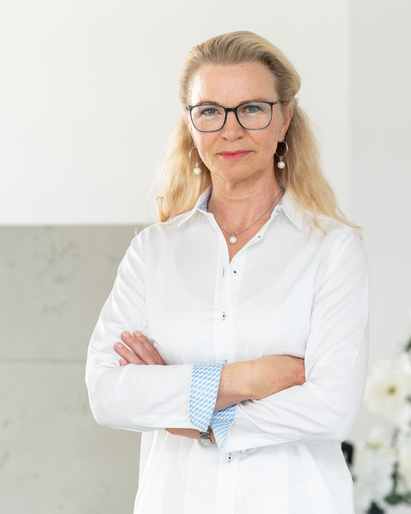

Dr. med. Sabine Messerschmidt
Zahnärztin, Praxisinhaberin
Schwerpunkte
- Komplexe prothetisch-chirurgische Rekonstruktionen
- Regenerative Parodontaltherapie und Parodontalchirurgie
- Augmentationschirurgie und Implantologie
- Ganzheitliche Zahnheilkunde
Werdegang
- Studium der Zahnheilkunde in Jena und Erfurt
- 1991 Approbation, 1993 Promotion
- 1995 Gründung der Praxis in Mainz-Laubenheim
- 2009 Gründung des Zahnzentrums Messerschmidt
- Tätigkeitsschwerpunkte Akupunktur (1996), Implantologie DGI und APW (2002), Parodontologie (2012), Endodontologie und Ästhetische Zahnheilkunde (2014)
- Seit 2012 Referentin für Fortbildungen von Kolleginnen und Kollegen